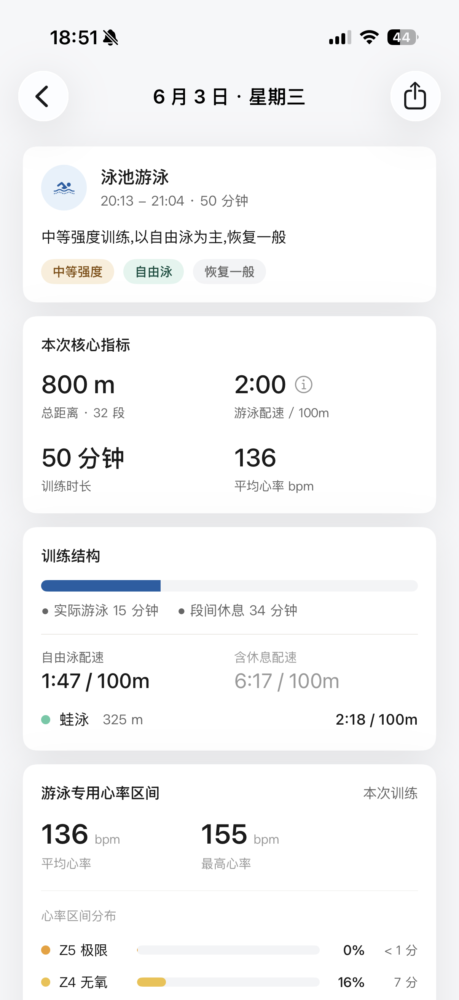

专为泳池游泳者打造。用去掉休息的净配速还原真实强度,把每一次训练和过去的你对比,清楚地看见——你正在变快。所有分析都在你的设备上完成。

游泳是为了变快,身体是变快的本钱。两条线一起看,训练才有据可依。
配速、SWOLF、距离的每一点变化都看得见。和过去的自己比,和你的个人最佳比——清楚地知道,你在进步。
结合 HRV、睡眠、训练负荷,告诉你今天该不该练、练多少。让每一次进步,都建立在科学恢复之上。
自动识别组间休息并切分,还原去掉休息的真实配速。间歇训练再也不会被一段休息拉垮整体数据——这正是原生记录最头疼的地方。
每一次训练都和你的历史与个人最佳对比。不是孤立的一堆数字,而是回答那个最重要的问题:我变快了吗?
自由泳、蛙泳、仰泳、蝶泳的配速与效率各自统计,不同池长严格分列。每一种泳姿的进步都看得清。
自动识别物理不可能的异常分段(比如比世界纪录还快的脏数据),清晰标注、不计入你的成绩与纪录。诚实,是可信的前提。
配速、SWOLF、距离的长期趋势,泳姿分布,本月对比上月,一眼看清节奏。
核心指标、心率区间、分段净配速、各泳姿配速分位、训练后身体反应,完整呈现。
本月游泳量、活跃日历、配速分布、个人最佳,一张卡片回顾整月。
按池长、泳姿分别追踪你的最佳配速,破纪录即时祝贺。
抬腕即看运动准备度、最近游泳、本周距离;表盘 complication 随时提醒。
破纪录祝贺、训练反馈、趋势预警,全部在设备本地生成,不上传。
健康数据的读取、分析与提醒生成,全部在你的 iPhone 与 Apple Watch 本地完成,不上传服务器。订阅通过 Apple StoreKit 处理,我们不保存你的支付信息。
每一次训练的客观数据完全免费。跨训练的对比、长期趋势与深度解读,由高级版解锁。
我们采用「净配速」——自动识别并去掉组间休息时间,只计算你真正在游的那段。所以同一次训练,我们的配速通常比含休息的配速更能反映你的真实强度。详情页里会同时显示净配速与含休息配速,方便对照。
App 通过 HealthKit 读取你的游泳训练记录、心率、HRV、睡眠等数据,用于生成配速、SWOLF、恢复等分析。这些读取需要你授权,且可随时在系统「设置 › 健康」中撤销。
不会。所有数据的读取、计算与提醒生成都在你的 iPhone 与 Apple Watch 本地完成,我们不收集、不上传你的健康数据,也没有任何第三方统计或广告 SDK。
不会。自由泳、蛙泳、仰泳、蝶泳的配速与 SWOLF 各自独立统计,不同池长(25m/50m)也严格分列,避免不可比的数据被平均。
每一次训练的客观数据(距离、配速、SWOLF、分段、心率区间)完全免费。跨训练的对比、长期趋势、强度分位与深度解读由高级版解锁。
订阅通过 Apple StoreKit 处理,可选月付、年付(含 7 天免费试用)或终身买断。退订在 iPhone「设置 › Apple ID › 订阅」中管理,我们不保存你的支付信息。
抬腕可查看运动准备度、最近一次游泳(含分泳姿净配速)、本周游泳量与负荷恢复;也可把运动准备度、距上次游泳、本周游泳次数添加到表盘 complication。
App 会自动标注物理不可能的异常分段(如比世界纪录还快的脏数据)并排除出成绩。若仍有疑问,可邮件联系 support@swimtrace.app。
免费下载,立刻看见你的游泳进步。